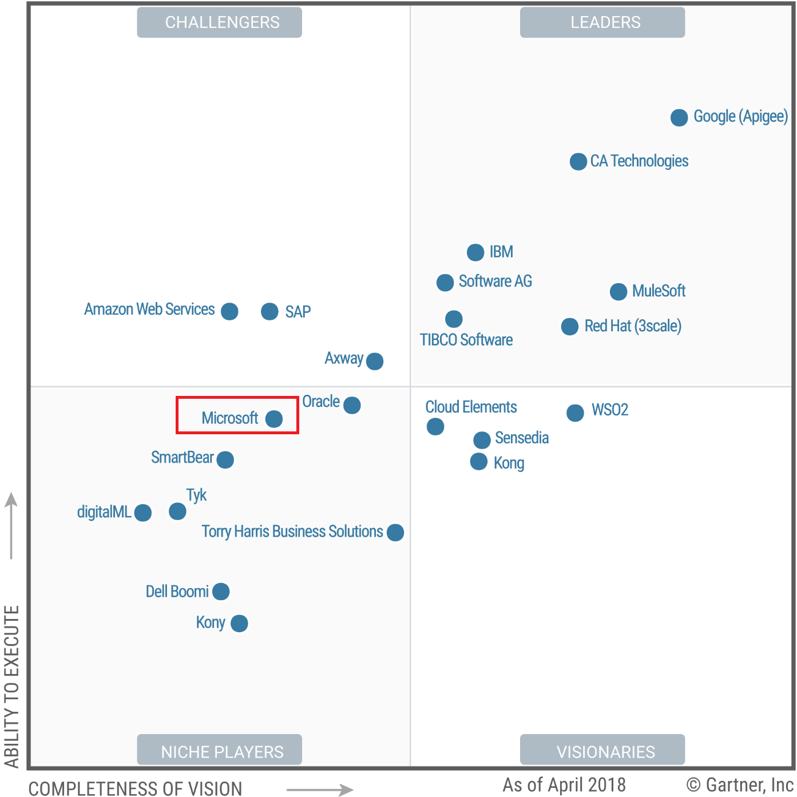

Azure
API
Management
Bryan Coller
Bryan Coller |
|
|
Director @ |
Consulting Experience |
|
| Roughly 20 years of development industry experience | Major manufacturing, healthcare and insurance providers in the Milwaukee, Chicago area |
Focus Areas |
||
| Past ~15 years on Service-Oriented Architectures | Past 2+ years on API Management | Past year on Azure |
Agenda
- Why API Management?
- Why Azure API Management?
- Demo
- Q&A
Goal
- Demonstrate how well Azure delivers on the promise of API Management.
Why API Management?
A Debate...
Services vs APIs
Service-Oriented Architecture
Developers focused on building "services"
What is a "service"?
A means by which providers codify business domain capabilities into reusable units.
Pitfalls
Services everywhere
Lack of documentation
Usage control (security, throttling, limits, who's calling?)
Issue resolution
API-Oriented Architecture
Complimentary to SOA
Allow services to be more easily consumed and managed
An "API" is:
A means by which services are packaged, productized and shared in an easy-to-use format.
Work best when they are well managed.
Let's talk about:
API Management
in:

Many API Managment vendors:
|
 |
||||||
API Management Core Components
- Gateway
- Proxy API requests/responses
- Policies (throttling, security, etc)
- Transform requests/responses
- Handle authentication, authorization
- Caching and analytics collection
- Publishing tools
- Manage API lifecycle (Creation, versioning, revisions, retirement)
- Managing access and policies
- Testing, debugging
API Management Core Components, cont'd
- Developer portal/API store
- Self-service access to APIs
- Interactive console for test-driving
- Ability to subscribe, gain access keys
- Reporting and analytics
- Monitor and report on API usage and loads
- Raise alerts
- Monetization
- Charging for API access
Why Azure API Management?
- Cloud-based, pay-as-you-go
- Immediate option for Azure organizations
- Learning curve
- Common Azure UI/UX, Services:
- Portal, Active Directory, Application Insights, Alerts, etc
- Common Azure UI/UX, Services:
Gartner Cautions for Azure API Management
- Concerned with long-term viability in evolving API Management market
- Does not support hosted on-premise deployments
- Lacks capabilities for later API life cycle stages
Courtesy of: Gartner Reprint
Demo
- API Products
- Policies
- Global, Product, API
- APIs
- Supported Types
- Swagger/OpenAPI
- SOAP (converted to JSON)
- Testing
- Supported Types
- Developer Portal
- Security
- Subscription Keys
- OAuth 2.0
- Logging